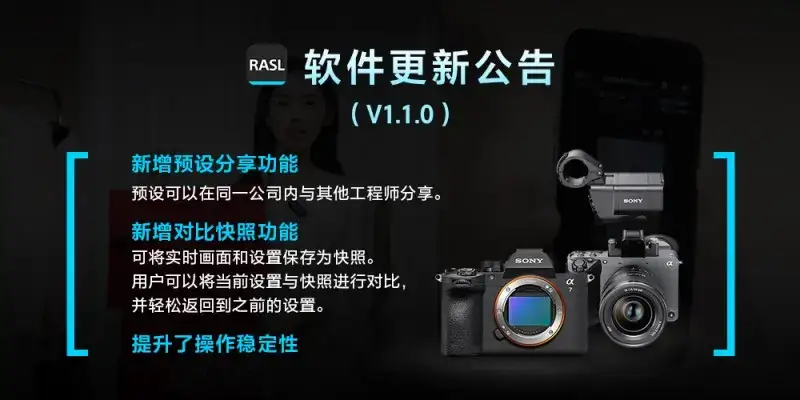
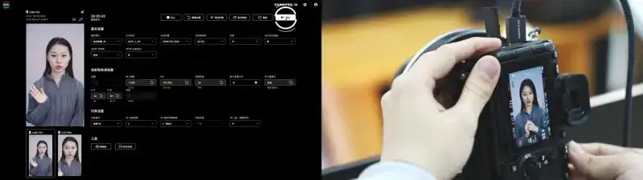

Sony's Cinematic Live Remote Adjustment service tool (RASL) has drawn wide attention from live streaming service providers since its release this January. Providers have been trying and buying it. With the tool, an engineer can remotely fine-tune core camera parameters, compare the live image, and save parameter presets. Compared with the traditional on-site adjustment, it greatly raises the speed of customer response and lowers the cost of labor and time.
From April 2, the tool upgrades to V1.1.0. In the preset feature, a new preset share feature lets you share saved settings with other engineers in the company. In the compare feature, a new comparison snapshot feature saves the live image and settings as a snapshot. During adjustment, you compare against the snapshot to judge the result with ease. The overall stability of the tool also improved.
• Cinematic Live Remote Adjustment V1.1.0 upgrade points:
1. New preset share feature: presets can be shared with other engineers in the same company.
2. New comparison snapshot feature: you can save the live image and settings as a snapshot. The user can compare the current settings with a snapshot, and easily return to the earlier settings.
3. Improved operation stability.

The new V1.1.0 makes live remote adjustment more efficient and the process more professional.
In live streaming parameter control, the traditional way has a high communication cost and a hard time controlling image precision. Sony's Cinematic Live Remote Adjustment tool revamps the remote parameter workflow of live service providers, so efficiency and professionalism rise together.
In the past, a live service provider used a video call to verbally guide the host to adjust camera parameters such as aperture, ISO, and white balance by hand, and judged the image from the host's on-site description. The communication was slow and heavy, and it easily led to detail errors such as inaccurate skin tone and visible image noise. It was hard to reach the ideal live image quality quickly. Now, with Sony's Cinematic Live Remote Adjustment tool, the host only needs to connect the camera and computer directly with a USB-C cable. The provider can then control the camera parameters remotely and precisely, and the adjustment shows in real time. With the one-tap compare feature, the provider checks the image efficiently, improves the adjustment flow greatly, and usually reaches the expected image quality in one pass. The tool fits the Sony camera ecosystem deeply. It supports cloud operation on computers and tablets. It also keeps a history of adjustment records for quick recall, export, and analysis. This makes the service flow more standard, teamwork smoother, and greatly cuts the cost of communication and trial and error. It delivers professional fine tuning, lower cost, and higher efficiency.

A live service provider uses Sony's Cinematic Live Remote Adjustment tool for live adjustment.
Sony's Cinematic Live Remote Adjustment tool makes the remote adjustment flow more systematic and professional. The new firmware upgrade further raises the operating efficiency of live service providers. By lowering cost and raising efficiency across operations, it gives the live streaming technology industry a new way to optimize operations and improve management.
From April 2, users can visit the Cinematic Live Remote Adjustment page and download the tool. For more, follow the Sony China official site, the Sony China WeChat account (WeChat ID: sonycn 001), the Sony China Pro WeChat account (WeChat ID: Sonystudio), the Sony Imaging Circle official Weibo, and the Sony Imaging Circle official WeChat account (WeChat ID: sonycn 002), for details.